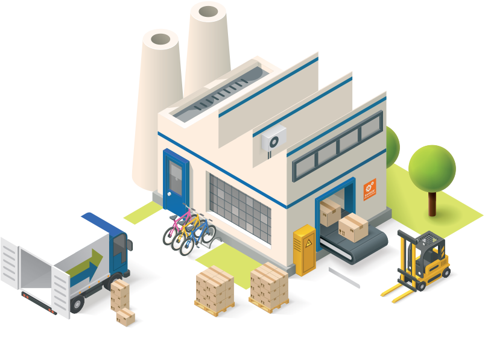

Datos y archivos en sistemas de información
Significado datos
Son una unidad mínima de información que muestra cifras, valores y hechos aislados del mundo real. Mediante estos se genera la información de salida de un sistema de información. Es importante tener en cuenta que el dato no tiene sentido en sí mismo, sino que se utiliza en la toma de decisiones o en la realización de cálculos a partir de un procesamiento adecuado y teniendo en cuenta su contexto. Por lo general, el dato es una representación simbólica o un atributo de una entidad. Otras formas de entenderlo
Su uso:
Los datos se almacenan en carpetas, libros, archivos y/o bases de datos y las empresas los necesitan para la ejecución de sus actividades tanto operativas y transaccionales como tácticas y estrátegicas.
Significado de Archivos
Conjunto de datos asociado a una aplicación específica, por lo que su accesibilidad es específica.
Características
- Redundancia de datos.
- Inconsistencia de los datos.
- Dependencia entre los programas y los datos.
- Carencia de flexibilidad.
- Seguridad escasa.
- Carencia de compartición de datos.
¿Y.. cómo se complementan?
Estas dos grandes herramientas de los sistemas de información surgen para superar las limitaciones de accesibilidad de los archivos, la información de las bases de datos es un recurso corporativo en cambio la de los archivos son un recurso de las persona que utilizan las aplicaciones.
| Personas | Instituciones | Organizaciones | Clasificaciones | Documentos | Catálogos |
|---|---|---|---|---|---|
| Alumnos | Bancos | Departamentos | Tipos | Facturas | Materiales |
| Pasajeros | Empresas | Sucursales | Clases | Pedidos | Productos |
| Profesores | Universidades | Plantas | Conceptos | Ordenes | Asignaturas |
 |
 |  |
Beneficios de las bases de datos
- Control de la redundancia.
- Consistencia de los datos.
- Independencia de los datos.
- Datos compartidos.
- Reducción de los costos de desarrollo y mantenimiento.
- Aumento de la flexibilidad.